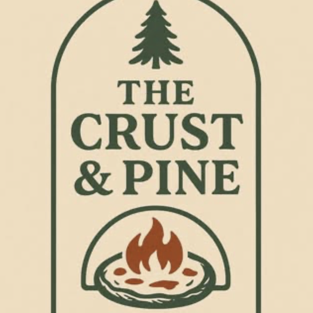

Name
The Crust & Pine Pizzeria
- “Crust” evokes handmade, golden, crispy pizza — the kind that's crafted with care and tradition.
- “Pine” brings to mind cozy cabins, forest air, and rustic charm — a place that feels warm, earthy, and inviting.
Logo
Purpose
- Serves as a local culinary ambassador at farmers markets, showcasing fresh, handmade pizzas
- Supports sustainable agriculture by sourcing seasonal ingredients from nearby farms
- Brings artisan pizza directly to customers through convenient delivery services
- Fosters community connections by participating in local events and market gatherings
Color Schema
Typography
- Font 1: Lora Bold
- Appearance: A balanced serif with soft curves and readability
- Font 2: Open Sans
- Appearance: Modern, clean, and highly readable
- Tone it conveys: Neutrality, accessibility, professionalism
Meet the Pizza Maker
View ProposalWebsite Recommendation & Brand Vision
Hi Brian,
Thank you for reviewing the two design proposals. To begin, I recommend a clean and functional website that highlights your contact information, showcases your pizza menu, and includes clear links for customers to easily get in touch. It's a simple yet powerful way to support your presence at the farmer's market and start building your online identity.
I'd be delighted to help you bring this website to life. The only ongoing cost to keep in mind is the domain name, which renews annually and typically costs around $15 USD. In the meantime, it's worth thinking about a name for your website, something that reflects your style and is easy for customers to remember.
As you shape your business, here are a few questions that might help you envision its future:
- Would you be open to making pizzas for weddings, private gatherings, or special events?
- Do you see yourself offering custom orders or delivery services down the line?
- What kind of customers do you hope to attract and serve?
Reflecting on these ideas can help clarify your brand's direction and how your website can support it. I'm here to guide you through each step of the process and make it as smooth and inspiring as possible.
Warmly,
Analina Nielsen